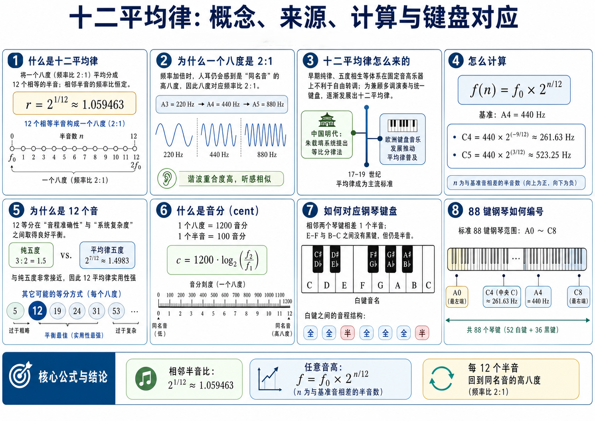
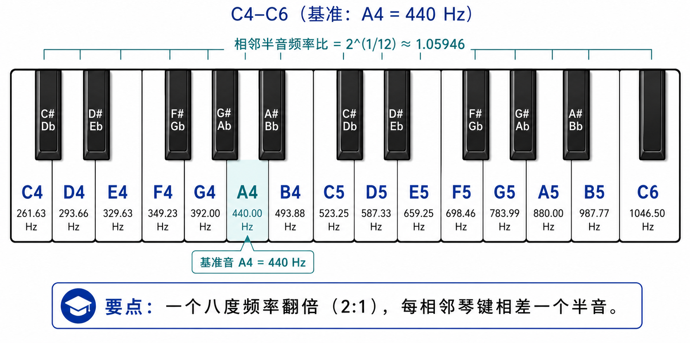
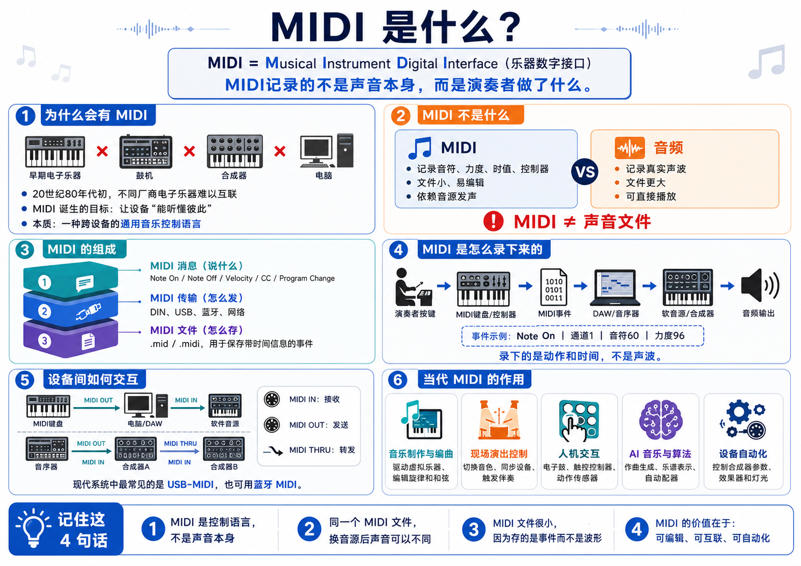

先把问题问清楚
课堂上不要把音高直接说成“频率”。频率是物理量，单位是 Hz；音高是听觉属性，回答的是“这个声音听起来有多高”。 对纯音来说，两者常常近似对应；对复合音、缺失基频和乐器声来说，音高是听觉系统对周期结构、谐波关系和神经时间信息的组织结果。
DRAFT CHAPTER / PITCH AND TIMBRE
音高和音色把听觉系统的加工结果转向“频率关系如何被组织成音乐和合成控制”。 因此这里单独成章，先理解音高与音色，再把十二平均律和 MIDI 分开作为两种符号化系统讲清楚。
PITCH
课堂上不要把音高直接说成“频率”。频率是物理量，单位是 Hz；音高是听觉属性，回答的是“这个声音听起来有多高”。 对纯音来说，两者常常近似对应；对复合音、缺失基频和乐器声来说，音高是听觉系统对周期结构、谐波关系和神经时间信息的组织结果。
音高通常用心理声学匹配任务测量：先呈现一个待判断声音，再让听者调节纯音或周期脉冲序列，直到两者听起来“同高”。 这个匹配频率或重复率不是声学仪器直接读出的属性，而是听者报告出的知觉等效量。
音高不是频率本身，而是听觉系统根据频率结构和时间周期形成的知觉。音色差异过大时，音高匹配会变难，这说明音高与音色可以概念区分，却不能在真实听觉任务中完全拆开。
基频、谐波数量和缺失基频开关展示了一个关键现象：音高依赖周期与谐波组织， 但听到的音高不一定等于某个单独频率成分。
440.00 Hz十二平均律频率
MIDI 69符号音频编号
A4当前琴键
打开缺失基频后，画布会压低 H1，并保留高阶谐波。这个现象说明： 音高判断可以来自周期结构，而不只是某一个频谱峰。
如果 H1 不在信号里，但 H2、H3、H4 仍然形成规则间隔，人耳仍可能听到对应的基频音高。
这是音高感知与频谱表示之间很适合讨论的分岔点。
音乐里的音高不是一条简单的“低到高”直线。Tone Height 指音高高度，通常随频率升高而上升； Tone Chroma 指音级类别，也就是 C、D、E 或 A、B 这类跨八度仍可被听成相近类别的旋律身份。
例如 220 Hz 与 440 Hz 的音高高度不同，但都可归入 A 类音级。八度感、旋律轮廓和音级命名依赖的不只是频率比，还依赖时间编码是否还能稳定提供周期信息。 当频率升到约 4-5 kHz 以上，听者仍能听出高低变化，但八度匹配、旋律组织和清晰的音级类别会明显变差。
谐波复合音的分量可写成 。 当 为 200 Hz 时，400、600、800、1000 Hz 等高阶谐波通常仍支持接近 200 Hz 的整体音高。 因此缺失基频现象说明：音高可以对应一个频谱中并不存在的基频。
低次谐波之间的间隔相对听觉滤波器带宽较大，能在基底膜上形成较独立的激励峰。听觉系统可利用这些低次谐波之间的整数关系，匹配最可能的基频模板。
高次谐波可能落入同一个听觉滤波器，不能被逐个分开，但滤波器输出的包络仍会按共同周期起伏。此时时间间隔和神经放电同步仍可提供基频线索。
复合音音高不是所有谐波的简单平均。实验中，低次、已分辨的谐波通常比高次、未分辨谐波产生更清晰、更稳定的音高，尤其是第 3、4、5 次附近的谐波常具有较高权重。
当复合音只含少量较低谐波时，不同听者可能采取不同组织方式。分析型听者 Analytic Listener 更容易听到各个谐波自身的音高； 综合型听者 Synthetic Listener 更容易把多个谐波融合成一个整体低音高。谐波数量增加、共同周期更稳定时，整体音高通常更占主导。
复合音音高来自耳蜗频谱分析与神经时间分析的联合，而不是单一的频谱峰值或单一的包络周期。 对机器听觉来说，这意味着 pitch tracking 不应只找最大谱峰，也不应只找全局自相关峰；需要同时考虑谐波可分辨性、共同周期、显著性权重和声源组织。
TIMBRE
如果两个声音以相同方式呈现，并且响度、音高大致相同，我们仍然能区分钢琴、小提琴、长笛或人声。这个剩余的听觉差异就是音色 Timbre 的核心问题： 它回答的不是“这个声音有多高”，而是“这个声音是什么样，可能来自什么声源”。
因此音色不能被压缩成一个单一数值。它通常同时涉及明亮/暗淡、尖锐/柔和、丰满/单薄、平滑/粗糙、纯净/带噪、瞬态强弱和稳定/波动等多个维度。
对稳态复合音来说，相对谐波幅度是音色的重要线索。即使两个声音有相同基频，只要谐波衰减规律不同，例如 与 ， 听起来也会明显不同。
但音色也不能只看线性 FFT 的每一个频点。更合理的描述要经过听觉滤波器或近似临界带/ERB 的分带，因为耳蜗看到的是分带后的激励模式和谱包络。
音色实验通过 H1-H5 能量和起音速度控制，比较“同一音高，不同频谱包络和时间包络”的听感差异。
明亮度常与频谱质心相关：高频能量占比越高，声音通常越明亮或尖锐。但它只是音色空间中的一个维度，不能代表全部音色。
真实声音包含起音、稳态、衰减和终止。两个声音即使长期平均频谱相同，只要起音速度、衰减方向或时间反转关系不同，听起来也可能完全不像同一声源。 钢琴声时间反转后不再像正常钢琴，就是典型例子。
真实乐器并不是所有谐波同时出现、同时达到峰值、再乘同一个包络消失。更真实的合成需要给不同谐波设置独立包络，并加入吹气、摩擦、敲击等非周期瞬态和噪声成分。
音高回答“这个声音有多高”，音色回答“这个声音是什么样、可能来自什么声源”。稳态音色主要受听觉滤波后的频谱形状影响； 音色是多维属性；长期平均频谱不能完整决定音色；各频率成分在什么时候出现、怎样增长、怎样衰减，也同样决定声源身份。
UNIFIED VIEW
音高与音色并不是来自两套完全分离的声学信息，而是听觉系统对同一复杂声音进行不同方式的整合。 共同周期、基频和谐波关系倾向于形成相对单一的音高；相对谐波幅度、谱包络、起音、衰减、噪声和瞬态则保留下更多声源细节，形成音色。
音高倾向于描述声音的周期结构，音色倾向于描述周期结构之外保留下来的频谱与时间细节。 因此，“找基频”和“识别音色”在算法上可以分成不同任务，但在听觉机制上共享耳蜗频谱分析、神经时间分析和听觉对象组织。
主要决定整体音高，也会影响声源的周期性身份。
影响音高显著度和稳定度，同时决定谱包络、明亮度和厚薄感。
通常不决定基本音高，却强烈影响乐器、人声和环境声的声源识别。
EQUAL TEMPERAMENT
音乐中的“同一个旋律升高一截仍像同一个旋律”，来自频率比例而不是频率差。八度 octave 对应频率乘以 2； 五度、四度、三度在不同文化和调律系统中常被看成重要音程，是因为它们接近简单整数比并容易与谐波结构形成稳定关系。
十二平均律把一个八度平均分成 12 个等比半音，使每一步频率比相同。这样牺牲了一部分纯律音程的精确整数比，换来一个巨大好处： 在所有调上使用同一套键盘位置和和声关系，转调、合奏、作曲和制造乐器都更方便。
中国、古希腊、阿拉伯-波斯、印度和欧洲都发展过基于比例、弦长、管长或声学经验的音阶理论。 但只要用纯五度、纯三度一路叠加，就会遇到闭合误差：若干个“很纯”的音程循环以后，无法同时回到完全一致的八度网格。
欧洲键盘乐器、复调和转调需求推动了多种 temperament：中庸律、良律、平均律等。十二平均律最终成为现代钢琴、吉他品格、合成器和数字音乐软件中最常用的默认网格， 不是因为它“天然唯一正确”，而是因为它在转调便利、和声可用性、制作标准化之间取得了工程折中。


五声音阶宫、商、角、徵、羽常被近似理解为一个八度内的五个稳定级进；十二律又提供更细的律名系统。 它强调调式骨架、旋律走向和音级功能，不等同于现代十二平均律的均匀半音网格。
现代大调、小调与十二平均律结合后，形成了便于转调、和声分析和记谱的软件默认语言。但这只是众多音高组织方式之一。
对机器听觉和音乐生成，十二平均律是一种方便编码，不是全世界音乐的唯一真值。处理传统音乐、声乐和非西方音乐时，要允许微分音、滑音和调式语法。
MIDI
MIDI 的全称是 Musical Instrument Digital Interface，即“乐器数字接口”。 它不是音频格式，不直接传输声音波形；它传输的是演奏和控制信息，例如按下哪个音、力度多大、选择什么音色、控制器旋钮转到哪里。
20 世纪 70-80 年代早期，不同品牌合成器、鼓机和音序器常使用彼此不兼容的模拟电压、触发或专有数字接口。 1981-1983 年间，Sequential Circuits、Roland、Oberheim、Yamaha、Korg 等厂商围绕通用乐器接口形成标准化方案； 1983 年 NAMM 展上，Sequential Prophet-600 与 Roland 设备之间的连接展示让 MIDI 成为电子乐器行业的共同语言。
今天 MIDI 仍然是 DAW、软件乐器、合成器、采样器、控制器、灯光、舞台设备和游戏/互动音频之间的核心控制语言。 作曲者可以录下键盘演奏为 MIDI 轨，再随时改音色、改速度、量化节奏、编辑力度、转调或驱动外部硬件。
在制作流程里，MIDI 负责“演奏结构”和“控制意图”，音频负责“实际声音结果”。这也是为什么同一段 MIDI 可以触发钢琴、弦乐、鼓机或粒子合成器： MIDI 描述事件，合成器或采样器决定声音。

常见 MIDI 1.0 演奏消息包括 Note On、Note Off、Control Change、Program Change、Pitch Bend、Channel Pressure 和 Polyphonic Key Pressure。 传统 MIDI 有 16 个逻辑 channel，用来区分不同乐器声部或控制目标。
一个 Note On 通常包含通道、音符编号和 velocity。比如 A4 常对应 MIDI note 69；velocity 描述按键力度，接收端可把它映射到响度、亮度或采样层。 Note Off 或 velocity 为 0 的 Note On 表示释放。
旋钮、推子、踏板和表情控制常通过 Control Change 发送。Program Change 切换音色；Pitch Bend 表示连续弯音；Clock、MTC、MMC 可用于节拍、时间码和录音设备同步。
一个典型链路是：控制器产生事件，MIDI 端口或 USB/Bluetooth/网络传输事件，DAW 或硬件合成器接收事件，再把事件映射成声音参数。 因此 MIDI 信息流通常是“事件流”，不是连续音频流：
MIDI 1.0 的很多数据是 7-bit，取值 0-127，足够支撑大量经典设备，但连续控制会有量化台阶。 MIDI 2.0 在保持 MIDI 1.0 音乐语义和兼容思路的基础上，加入更高分辨率的 Channel Voice、双向能力协商 MIDI-CI、Profiles 和 Universal MIDI Packet， 让现代控制器、软件乐器和网络/USB 传输能够表达更细的力度、弯音和每音控制。
PRACTICE
观察波形周期、谐波柱状图和包络形状，先预测声音会变高、变暗、变亮还是变硬。
使用浏览器音频播放当前设置。第一次播放需要用户点击，符合浏览器自动播放策略。
把“听起来像什么”落回基频、谐波和包络，而不是只停留在形容词。
学习路线
本章的对象已经转向音乐/符号/合成表示，适合被后续机器听觉和生成任务多次复用。